參考資訊：
https://github.com/ghidraninja/game-and-watch-backup
https://www.st.com/resource/en/datasheet/stm32h7b0vb.pdf
https://www.st.com/resource/en/reference_manual/dm00463927-stm32h7a37b3-and-stm32h7b0-value-line-advanced-armbased-32bit-mcus-stmicroelectronics.pdf
PLL架構圖，CPU固定使用pll1_p_ck
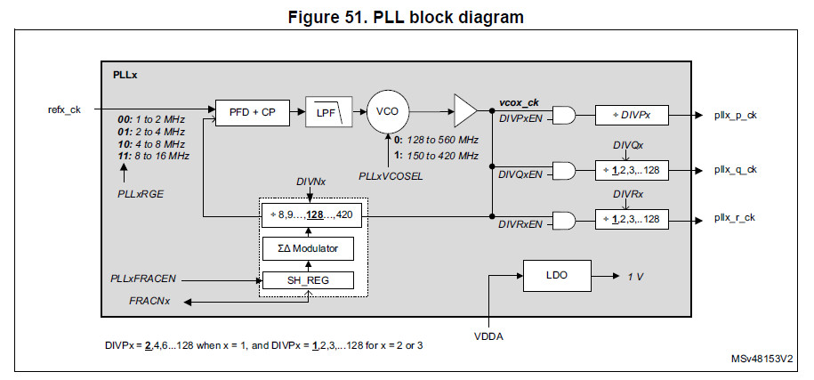
PLL1 = (((HSI / HSIDIV) / DIVM1) * DIVN1) / DIVP1 HSI = 64MHz HSIDIV = 1 DIVM1 = 16 DIVN1 = 222 DIVP1 = 2 PLL1 = (((64MHz / 1) / 16) * 222) / 2 = 444MHz
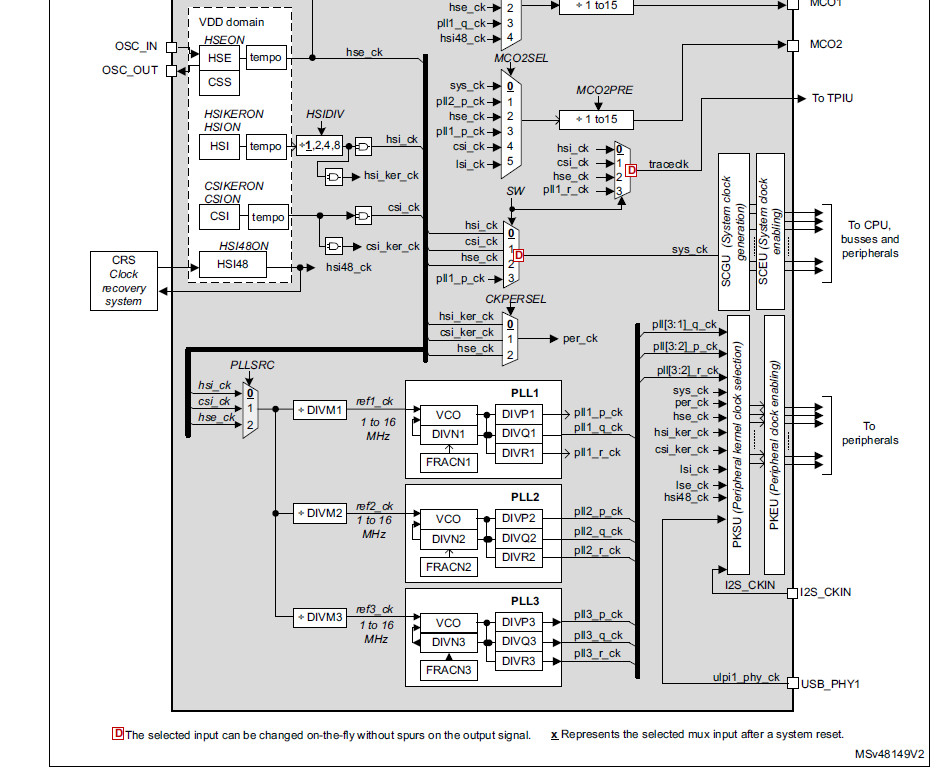
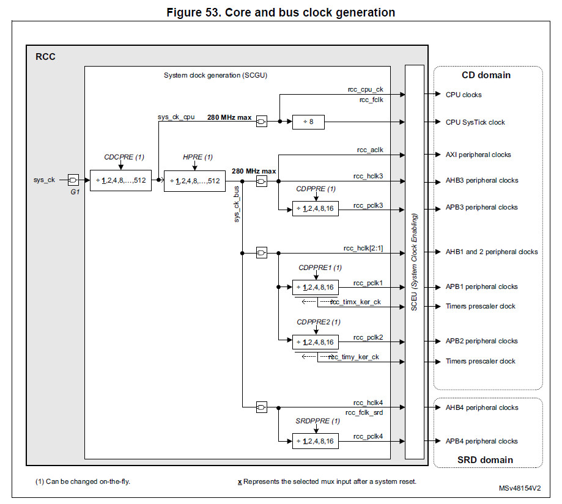
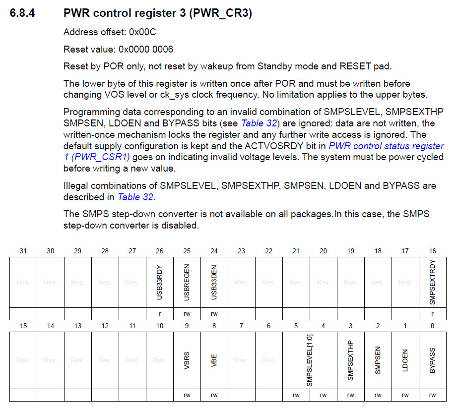
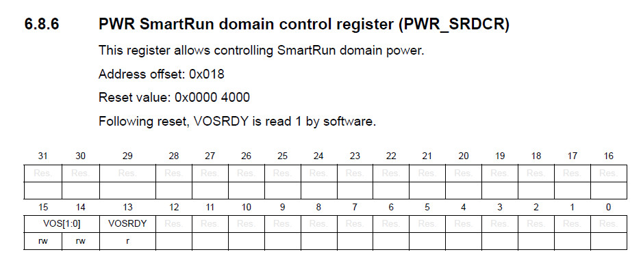
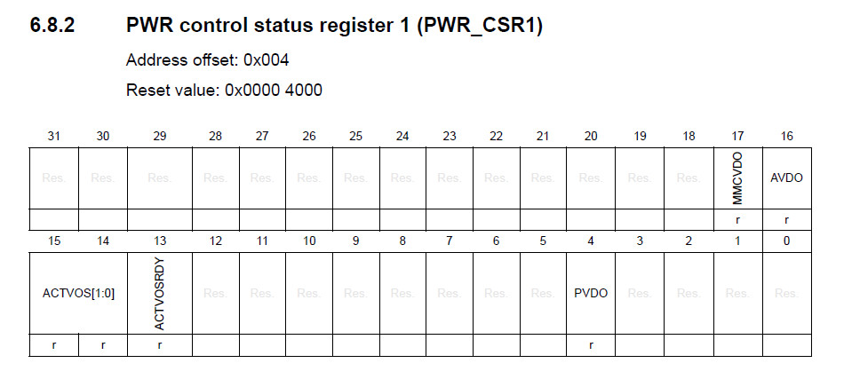
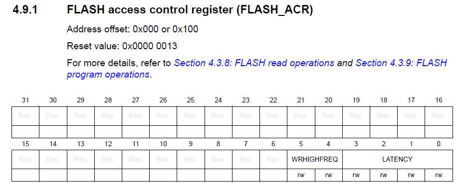
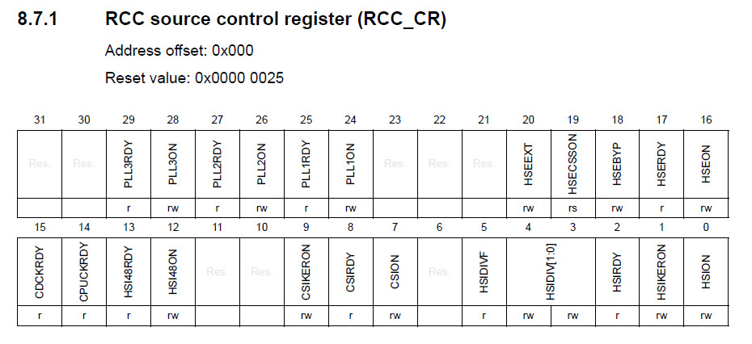
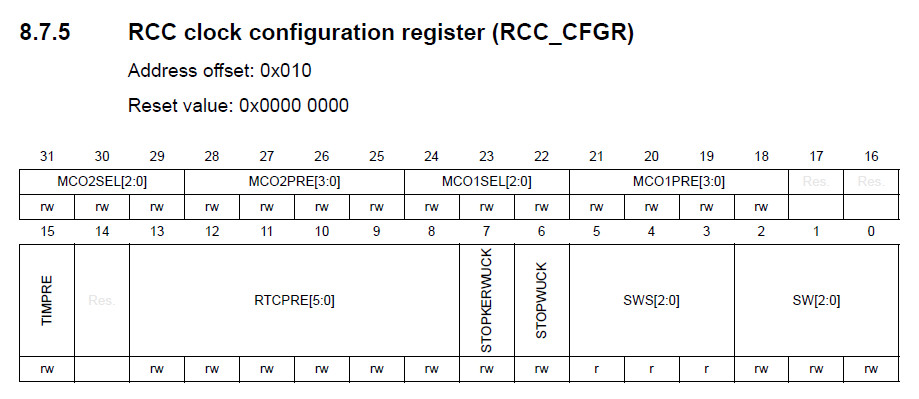
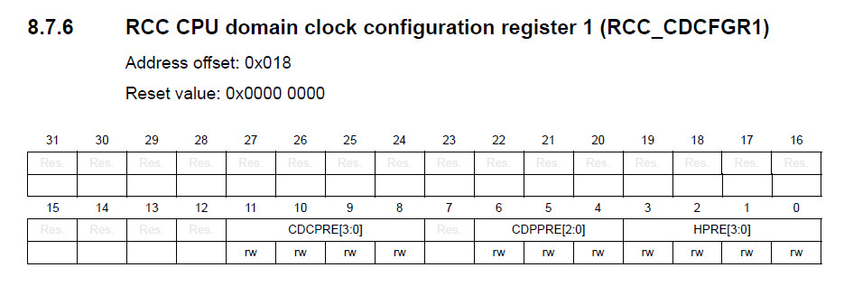
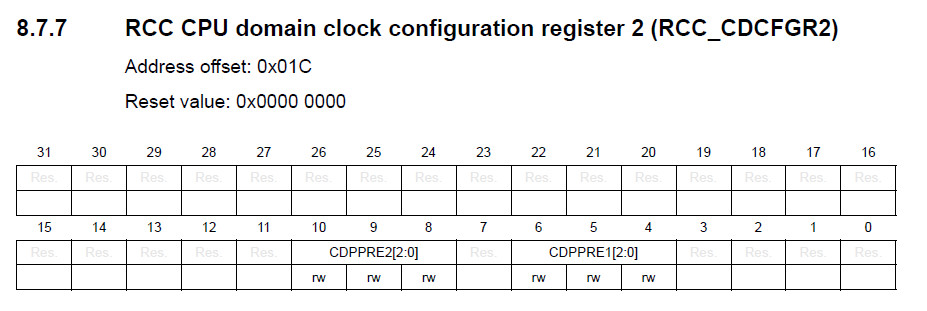
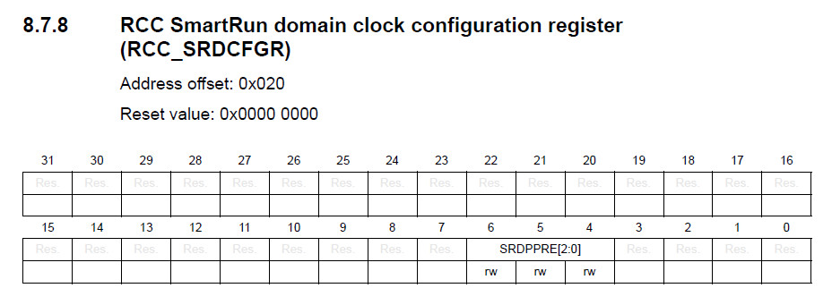
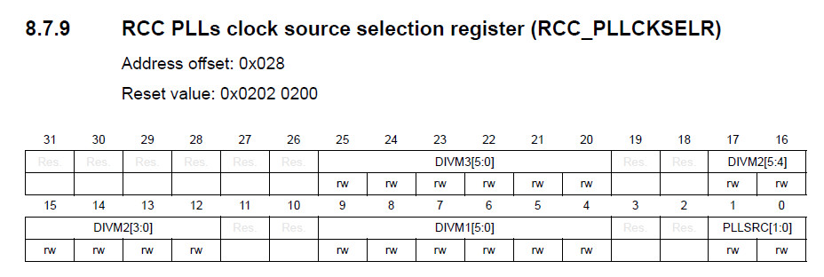
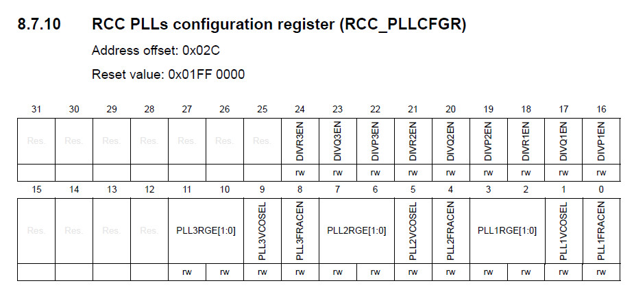
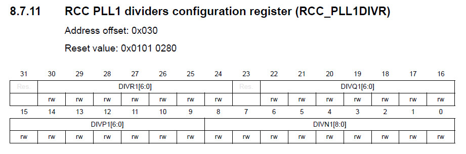
.equiv PORTC_BASE, 0x58020800
.equiv PORTE_BASE, 0x58021000
.equiv GPIO_MODER, 0x0000
.equiv GPIO_ODR, 0x0014
.equiv RCC_BASE, 0x58024400
.equiv RCC_CR, 0x0000
.equiv RCC_CFGR, 0x0010
.equiv RCC_CDCFGR1, 0x0018
.equiv RCC_CDCFGR2, 0x001c
.equiv RCC_SRDCFGR, 0x0020
.equiv RCC_PLLCKSELR, 0x0028
.equiv RCC_PLLCFGR, 0x002c
.equiv RCC_PLL1DIVR, 0x0030
.equiv RCC_PLL1FRACR, 0x0034
.equiv RCC_AHB4ENR, 0x0140
.equiv RCC_APB4ENR, 0x0154
.equiv PWR_BASE, 0x58024800
.equiv PWR_CSR1, 0x0004
.equiv PWR_CR3, 0x000c
.equiv PWR_SRDCR, 0x0018
.equiv FLASH_BASE, 0x52002000
.equiv FLASH_ACR, 0x0000
.thumb
.cpu cortex-m7
.syntax unified
.global _start
.text
.org 0x0000
_start:
.word 0x20020000
.word reset
.org 0x0100
.thumb_func
reset:
ldr r0, =PWR_BASE
ldr r1, [r0, #PWR_CR3]
orr r1, #2
str r1, [r0, #PWR_CR3]
0:
ldr r1, [r0, #PWR_CSR1]
tst r1, #(1 << 13)
beq 0b
ldr r1, [r0, #PWR_SRDCR]
orr r1, #(1 << 15) | (1 << 14)
str r1, [r0, #PWR_SRDCR]
0:
ldr r1, [r0, #PWR_SRDCR]
tst r1, #(1 << 13)
beq 0b
ldr r0, =FLASH_BASE
ldr r1, [r0, #FLASH_ACR]
bic r1, #0xf
orr r1, #7
str r1, [r0, #FLASH_ACR]
ldr r0, =RCC_BASE
ldr r1, =0x00419000 + (16 << 4)
str r1, [r0, #RCC_PLLCKSELR]
ldr r1, =0x01ff0d58
str r1, [r0, #RCC_PLLCFGR]
ldr r1, =0x01010200 + 221
str r1, [r0, #RCC_PLL1DIVR]
ldr r1, =0x00000040
str r1, [r0, #RCC_CDCFGR1]
ldr r1, =0x00000440
str r1, [r0, #RCC_CDCFGR2]
ldr r1, =0x00000040
str r1, [r0, #RCC_SRDCFGR]
ldr r1, [r0, #RCC_CR]
ldr r1, =0x03004025
str r1, [r0, #RCC_CR]
0:
ldr r1, [r0, #RCC_CR]
tst r1, #(1 << 25)
beq 0b
ldr r1, [r0, #RCC_CFGR]
bic r1, #0xfe000000
orr r1, #0x7e000000
orr r1, #3
str r1, [r0, #RCC_CFGR]
0:
ldr r1, [r0, #RCC_CFGR]
tst r1, #(3 << 3)
beq 0b
ldr r1, [r0, #RCC_AHB4ENR]
orr r1, #(1 << 4) | (1 << 2)
str r1, [r0, #RCC_AHB4ENR]
ldr r0, =PORTC_BASE
ldr r1, =(2 << 18)
str r1, [r0, #GPIO_MODER]
ldr r0, =PORTE_BASE
ldr r1, =(1 << 22)
str r1, [r0, #GPIO_MODER]
ldr r1, =(0 << 11)
str r1, [r0, #GPIO_ODR]
0:
eor r1, #(1 << 11)
str r1, [r0, #GPIO_ODR]
ldr r2, =0x01000000
1:
subs r2, #1
bne 1b
b 0b
.end
使用示波器量測MCO2輸出
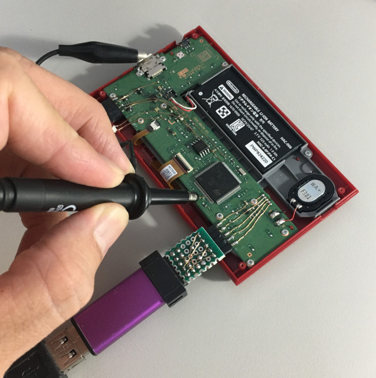
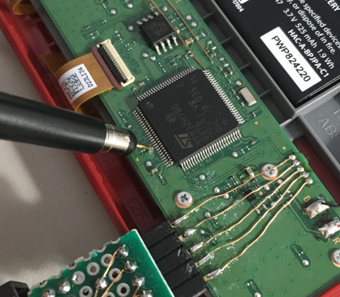
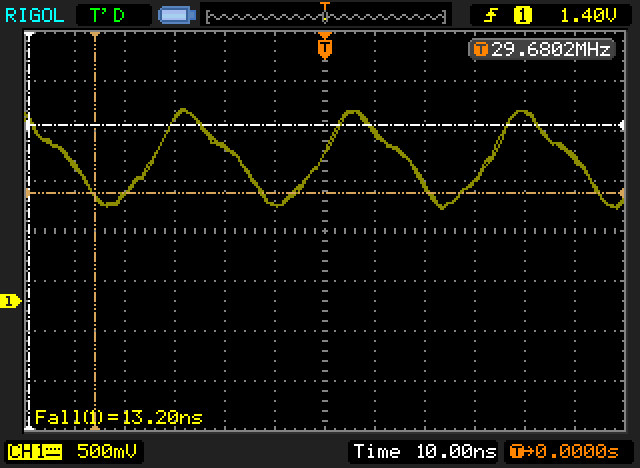